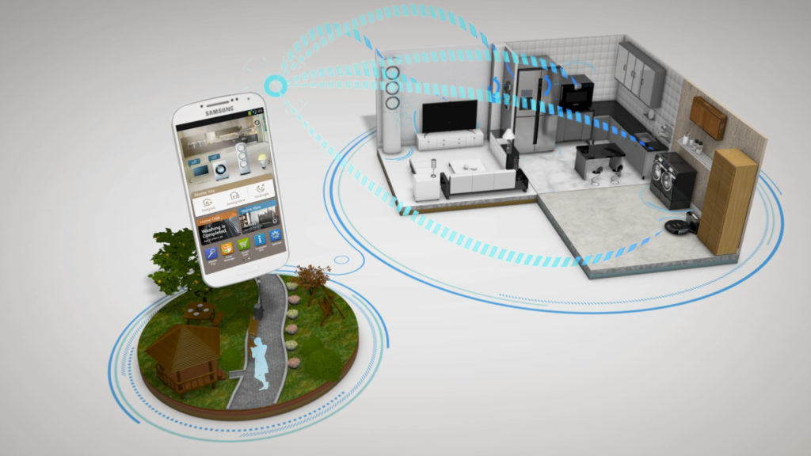

Egyes kutatások szerint 2025-re globálisan a háztartások ötödében lesz már okosotthon készülék*. A növekvő fogyasztói igények egyre kifinomultabb és fejlettebb intelligens megoldásokat hívnak életre, amiket többek között a zöld gondolkodás, energiatakarékossági szempontok és kényelmi funkciók hajtanak.
Okos vezérlésbe kapcsolódás és központosítás: A régebbi építésű otthonok úgynevezett fel-okosítására is kifejezett igény mutatkozik. Hogy az ilyen típusú megoldások már most elérhetőek, arra jó példa, hogy a Magyarországon közkedvelt, kombinált padló-radiátoros fűtés rendszerek egésze is bekapcsolható okos vezérlésbe. Erősödik az a trend is, hogy az okosházak egy közös kommunikációs nyelven kommunikáljanak, azaz az ingatlanokba beépített részegységek képesek legyenek kapcsolatot létesíteni egymással és egy nagy egészként optimálisabban működni.
Egészségtámogatás éjjel-nappal: Az intelligens otthonok képesek lesznek nyomon követni és észlelni az egészségünkben bekövetkező változásokat, amelyre óriási kereslet mutatkozik. Fejlettebb alvásfigyelő készülékek már most is képesek felismerni a depresszió korai jeleit. Várhatóan az okosotthonok alapfelszereltsége lesz a testhőmérséklet-felügyeleti rendszer, de az allergéneket észlelő szenzoroktól kezdve a testünkben bekövetkező változásokat jelző fitnesz modulokig számos fejlesztés járulhat hozzá az egészségünk megőrzéshez.
Otthoni munkavégzést segítő megoldások: A Covid-19 járvány miatt az otthoni munkavégzés sosem látott dinamikával nőtt. Ez a tendencia valószínűleg a jövőben is fennmarad, ezért szükségessé válhat az otthoni irodai automatizálás. A levegő minőséget, páratartalmat szabályozó szellőztető rendszerek, intelligens hangszórók, kijelzők és más eszközök megjelenése az utóbbi években megnyitotta az utat az új, okos irodai megoldások felé. Az okos kijelzők segíthetnek pl. a dolgozóknak a videóhívások lebonyolításánál, de az üzleti alkalmazásokból származó releváns információk kinyerésénél is.
Még intelligensebb fényrendszerek: Az intelligens fényrendszerek már most számos működési funkcióval egészülnek ki, mint az hang vagy gesztus érzékelés, vagy a távoli aktiválás. 2022-ben még kifinomultabb technológiákkal bővülhet ez a szegmens; egyre népszerűbbek lesznek azok a megoldások, amikor a helyiségben lévő fény mennyiségének megfelelően a rendszer maga állítja be a belső tér fényeinek intenzitását. Egy másik izgalmas funkció a fényszimulációk, amelyek a ház-biztonságot növelik a hosszú ideig felügyelet nélkül hagyott otthonoknál.
Egy intelligens rendszer felállítása az alábbi folyamatok sorából áll:
Kalkulátorunkkal meghatározhatja, hogy az okos otthonra rakott adott számú panelből kiépített rendszer esetén mekkora teljesítményre számíthat, és mekkora tetőfelület szükséges a rendszer telepítéséhez!
A csúszka segítségével állítsa be a kívánt panelszámot!
A számításnál az ideális DK-i tájolással és 35°-os dőlészögű tetővel számolunk!